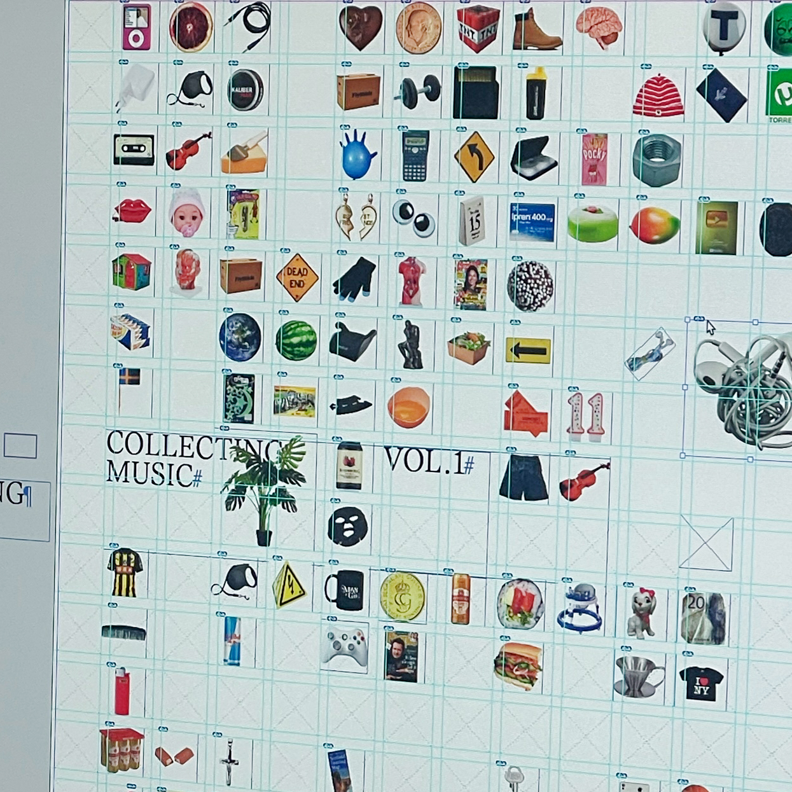
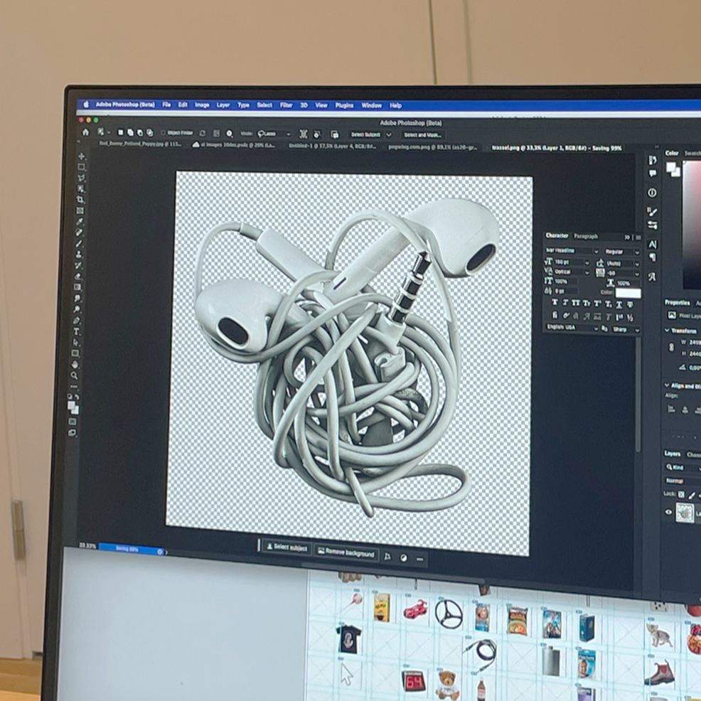
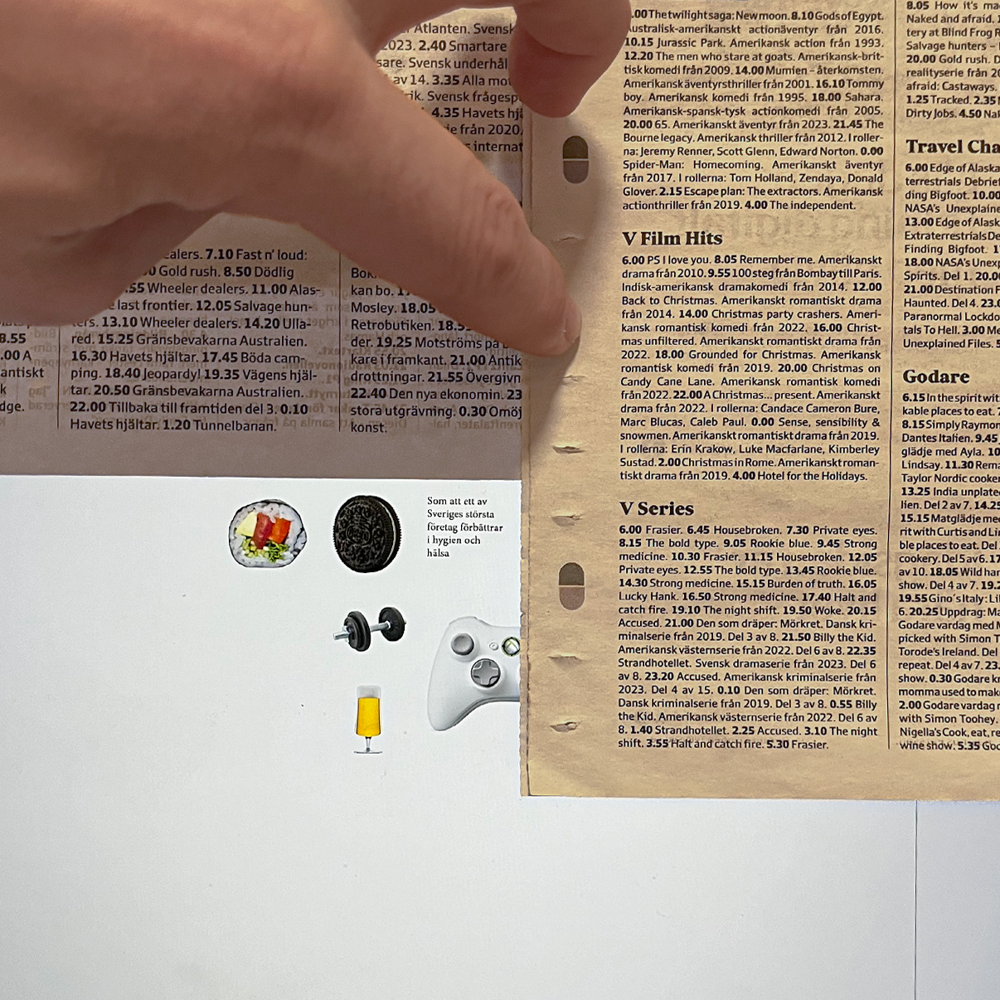
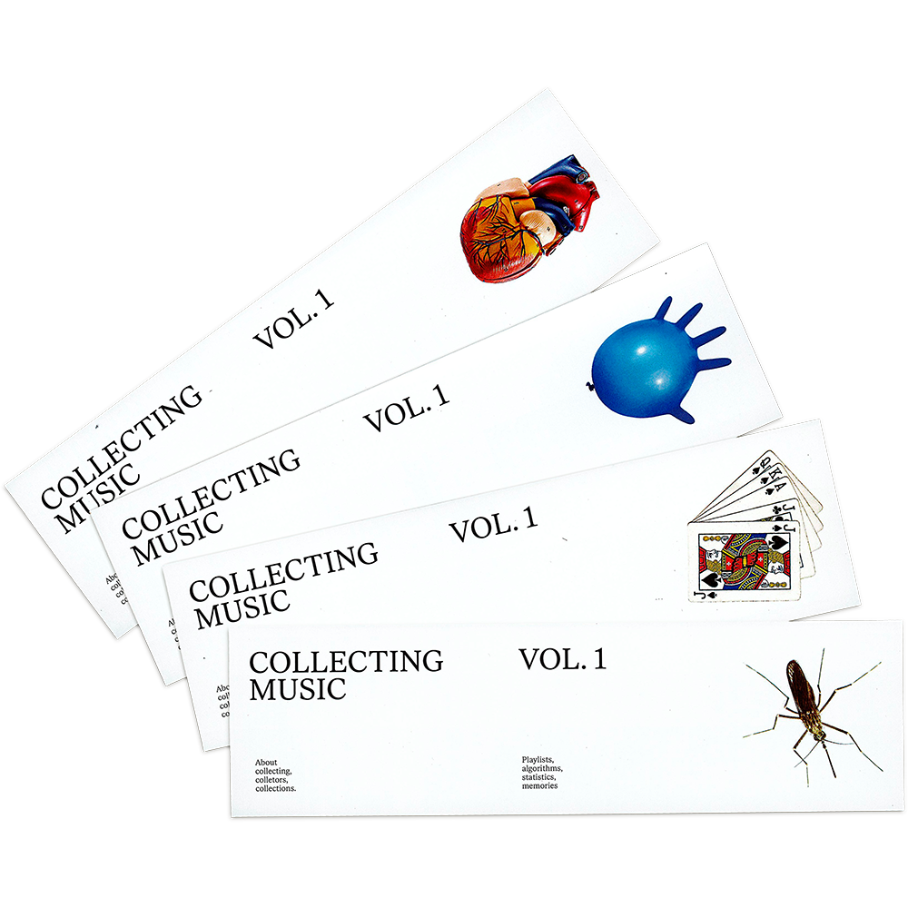

Collecting Music

Collecting is a magazine about collections, music and using digital interfaces. The tabloid magazine is 8 pages in 289 * 380 mm.
Playlists, piracy, algorithms and memories. Collecting is a magazine about collecting and in Volume 1, Music, it's about the ways people collect music. Why we create playlist, how we choose music and the ways Spotify and other digital platforms for music listening have shaped our habits.
Inspirations in the project were Every Noise at Once, Simon Evans' Everything I Have and this essay about playlist psychology. Graphic design choices were based on personal computer UI, catalogues and charts.
The project's concept and design was made in collaboration with Solvej Jansson and Elvin Odelholm, in the course Editoral Design, led by Stefania Malmsten at Beckmans College of Design.




The first issue of collecting uses 306 individual images collected on the internet or our photo libraries. The images correspond to interviews, statistics or lyrics mentioned in the magazine.
The playlists, tools and texts mentioned in the magazine are presented on the Online Edition of Collecting. The site, made with plain CSS, is online.

Bookmarks with qr code linking to Collecting's Online edition.